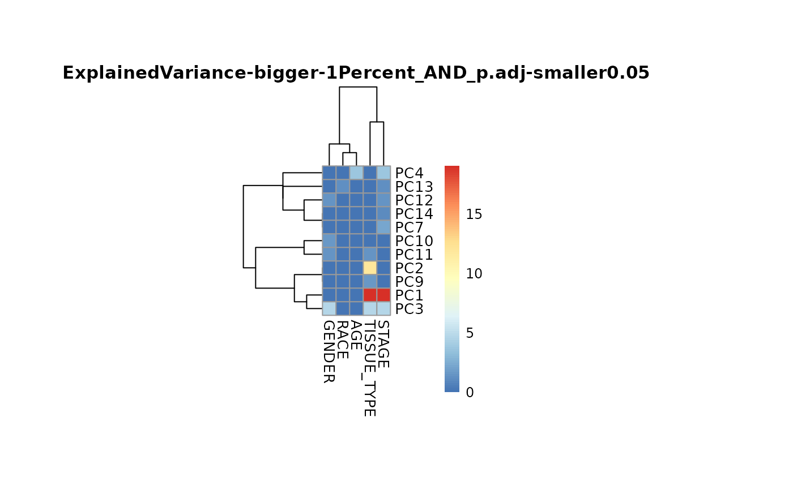

This function performs a PCA analysis on the input data and combines it with the sample metadata to perform an ANOVA test to identify significant differences between the groups.
Source:R/MetaDataAnalysis.R
metadata_analysis.RdThis function performs a PCA analysis on the input data and combines it with the sample metadata to perform an ANOVA test to identify significant differences between the groups.
Usage
metadata_analysis(
data,
metadata_sample,
scaling = TRUE,
percentage = 0.1,
cutoff_stat = 0.05,
cutoff_variance = 1,
save_table = "csv",
save_plot = "svg",
print_plot = TRUE,
path = NULL
)Arguments
- data
DF where rows are unique samples and columns are features, with numerical values in columns, and metabolite identifiers as column names. Use NA for metabolites that were not detected. Includes experimental design and outlier column.
- metadata_sample
Optional: DF which contains information about the samples, which will be combined with your input data based on the join specification in
by. Column "Conditions" with information about the sample conditions (e.g. "N" and "T" or "Normal" and "Tumor"), can be used for feature filtering and colour coding in the PCA. Column "AnalyticalReplicate" including numerical values, defines technical repetitions of measurements, which will be summarised. Column "BiologicalReplicates" including numerical values. Please use the following names: "Conditions", "Biological_Replicates", "Analytical_Replicates".Default = NULL- scaling
Optional: TRUE or FALSE for whether a data scaling is used Default = TRUE
- percentage
Optional: percentage of top and bottom features to be displayed in the results summary. Default = 0.1
- cutoff_stat
Optional: Cutoff for the adjusted p-value of the ANOVA test for the results summary and on the heatmap. Default = 0.05
- cutoff_variance
Optional: Cutoff for the PCs variance that should be displayed on the heatmap. Default = 1
- save_table
Optional: File types for the analysis results are: "csv", "xlsx", "txt". Default = "csv"
- save_plot
Optional: Select the file type of output plots. Options are svg, png, pdf. Default = svg
- print_plot
Optional: TRUE or FALSE, if TRUE Volcano plot is saved as an overview of the results. Default = TRUE
- path
Optional: Path to the folder the results should be saved at. default: NULL
Examples
Res <- metadata_analysis(
data = tissue_norm[,-c(2:14)]%>%tibble::column_to_rownames("Code"),
metadata_sample = tissue_norm[,c(1,3,5:6,13:14)]%>%tibble::column_to_rownames("Code")
)
#> The column names of the 'metadata_sample' contain special character that where removed.
